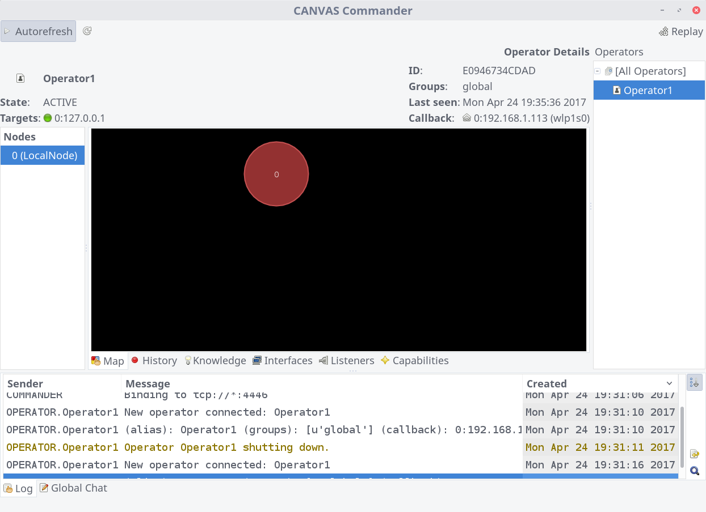

CANVAS Strategic¶
We will cover and review some of the features provided by the Canvas Strategic df package, which is part of the standard canvas. The Canvas Strategic essentially allows live communication between multiple instances of Canvas and sharing the information (knowledge, performed actions, obtained shells) with a central commander instance, which is a machine running the the Commander module from the Canvas. This feature is specially useful when a team of users are working together on an engagement and activities, progress and achievements needs to be coordinated and collaborated. Moreover it can be also used as a central activity monitoring and logging for multiple canvas instances. Canvas Strategic allows creating multiple channels for multiple simultanious engagements as well as a simple chat server that Canvas users could join and communicate with.
Starting Canvas Strategic¶
The Canvas Strategic runs as a module within the Canvas, but has one extra python package dependency that needs to be
satisfied before you can start it. In the main Canvas menu bar the Control menu is where you can find the Strategic
options. If the required dependencies are missing you will not be able to see the sub-menus. To fix that you should
close the Canvas and install the pyzmq package for Python. An easy way to do so would be via the pip command.
The pip command should be available on both Windows and Linux if you are using the latest version of Python
$ pip install pyzmq --user
After relunching the Canvas, you should have the Canvas Strategic available under the Control menu with three options
Start Commander, Start Operator and Reply.
The Canvas Strategic is implemented using a Client/Server architecture, Commander being the server side here and all
other Canvas instances and users connecting back to it as Operator. Operators connect back to the Commander using two
ports which by default are TCP/4445 and TCP/4446, so these ports should be accessible by operators and opened on
the firewall, if a firewall is protecting the Commander machine.
So to start the Canvas Stragetic in Commander mode, we simply select the Start Commander from the menu and a new
window such as the following will show up.
Warning
The traffic and communications between the commander and operator machines are not encrypted and secure by default. It is recommended to tunnel these connections over a secure channel, for example by using SSH port forwarding. To do so the commander machine needs to have an SSH server running.
To avoid mistakenly communicate over insecure connection, the Operator module by default tries to connect to the default ports on LOCALHOST. Operators are expected setup SSH port forwarding prior starting the Operator module. To start SSH port forwarding, ass uming that the oeprator is running on Linux or a working ssh client is already present, you can run the following command on the operator machine
$ ssh -v -L 4445:localhost:4445 -L 4446:localhost:4446 operator1@commander-host
Obviously you will need to have valid accounts already created on the commander machine. Since we are only using the port-forwarding feature of SSH here, a limited user account will suffice. To make the setup even more secure, you could also remove the default shell for created accounts and disable sftp/x11forwarding access so that operator users cannot execute any commands on the commander machine over ssh.
If you are willing to use the Canvas Strategic as operator in the insecure way, you can of course change this behaviour
by modifying the defalt commander IP using the Configuration button in the Cavans main GUI or canvas.conf file
which is located in the root of the Canvas installation folder. The line related to the IP address of the commander
server is ”;commander = 127.0.0.1” which is commented out by default. You need to change the IP address mentioned in
this line to the Commander’s IP address, remove the ; at the begining of the file and relunch the Canvas. You can also
change the default ports in the same way but note that if you do so, changes must be applied to the canvas.conf file on
both of the operator and commander machines.
To make the identification of operators easier, operators can also set an alias for themselves using the same
configuration file or in the Configurations menu from the Canvas GUI. The option in the configurations window is
Operators Alias which is the name that will be shown in the commander instance.
Once reverything is set, operators can connect to the commander by selecting the Start Operator from the Control
menu in the Canvas GUI. Up on successful connection, the operator should see the result at the bottom of Canvas main
window in the Commander Log tab. There’s also a Chat tab which can be used to communicate with the commander or
other operator.
Up on successful connection of an operator, the commander window will be automatically updated to list connected operator(s):
There are multiple tabs available for each selected operator, presenting live information and events from the operator Canvas. Note that at this point the commander can only view the information from operators and no interaction can be made with remote canvas instances from this window. Tabs presented in the commander view are essentially identical to what each operator user sees in their running canvas instance. For example the Map tab will show a graph of connected remote (MOSDEF) notes, if the selected operator canvas instance has any.
Video Demonstration ^^^^^^^^^^^^^^^^^^^^ If you do not have an environment to setup and test the Canvas strategic but would like to see it in action, or have problems setting up the commander or operator instances, the following demonstration video will give you a good overview of this feature, as well as walking you through the streps required to setup Canvas Strategic.